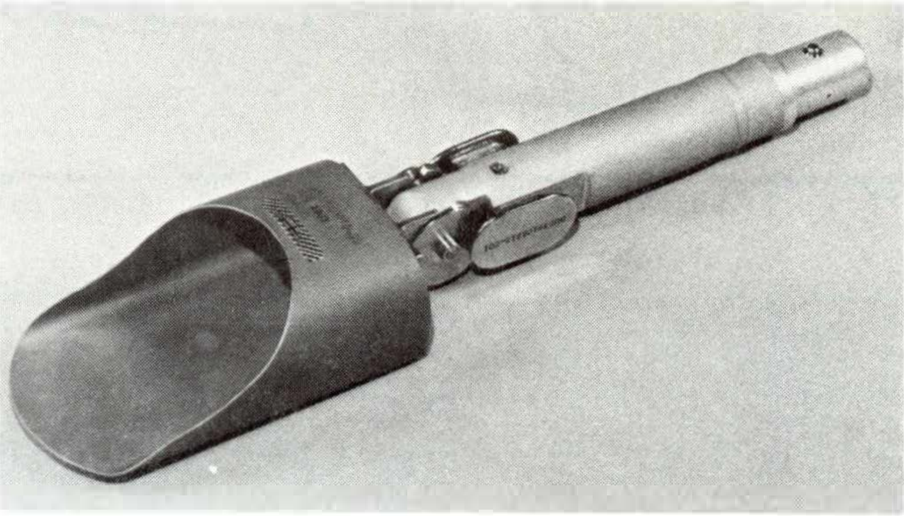
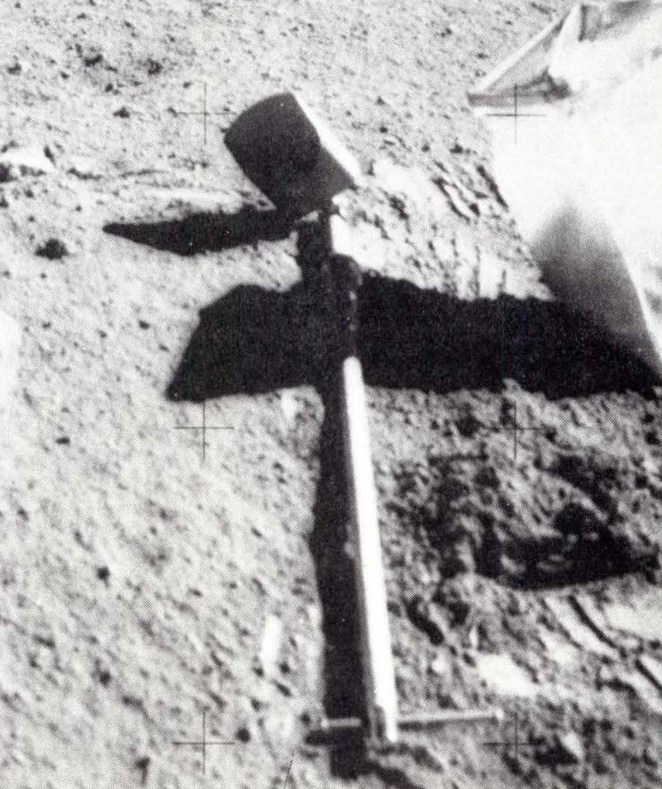

ADJUSTABLE-ANGLE SCOOP
Apollo 15, 16, & 17 Missions
Description
This scoop was used only on Apollo 15, the first mission to employ the large tool carrier mounted on the Lunar Roving Vehicle. The scoop was stowed for use on this tool carrier. Later missions employed a larger version of the adjustable-angle scoop. All adjustableangle scoops were designed to be pushed or pulled.
Physical Attributes
-
Weight
516 g
-
Dimensions
32.8 cm overall length
7.3 cm pan width
4.6 cm pan height
12.7 cm pan length -
Materials
17-7 PH Stainless Steel
-
Manufacturer
NASA, Johnson Space Center
Images
-

Small, adjustable-angle scoop (NASA photo S71-22472) -

Small, adjustable-angle scoop attached to longer model extension handle. -

Large, adjustable-angle scoop with pan adjusted for maximum tilt on lunar surface during Apollo 17 mission (NASA photo AS 17-138-21160)